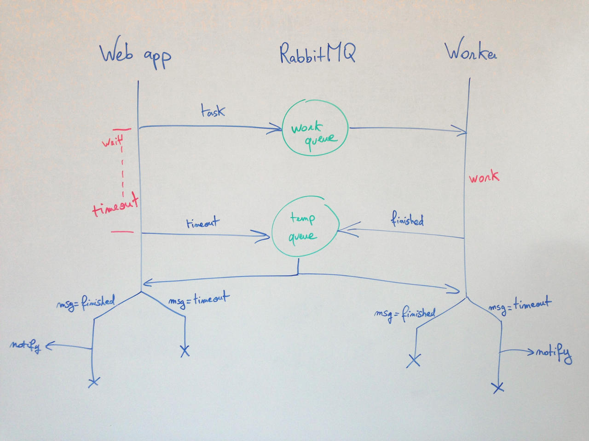

Using RabbitMQ
The RabbitMQ adapter uses the php-amqplib library.
You need to require the library in composer:
{
"require": {
"myclabs/work": "*",
"videlalvaro/php-amqplib": "~2.0"
}
}This following is inspired from the official RabbitMQ docs, you should read them first.
On your client side (MVC application for example):
// Connect to the RabbitMQ server
$connection = new AMQPConnection('localhost', 5672, 'guest', 'guest');
$channel = $connection->channel();
// Create a queue
$channel->queue_declare('some_queue', false, false, false, false);
$workDispatcher = new RabbitMQWorkDispatcher($channel, 'some_queue');
// Run a task in background
$task = new MyTask();
$workDispatcher->run($task);On the worker side (this script is meant to be run continuously as a deamon):
// Connect to the RabbitMQ server
$connection = new AMQPConnection('localhost', 5672, 'guest', 'guest');
$channel = $connection->channel();
// Create a queue
$channel->queue_declare('some_queue', false, false, false, false);
$worker = new RabbitMQWorker($channel, 'some_queue');
$worker->registerTaskExecutor('MyTask', new MyTaskExecutor());
// Execute tasks
$worker->work();Waiting for a task to finish
In some setups, you might want to wait for a task to finish executing.
For example, you may want to execute a task in background and:
- either display a message on the webapp (in the HTTP response) if the task finished in less than 5 seconds
- or notify a user by email later if the task takes more than 5 seconds
In short, your webapp will send the task to be run in background, and wait for 5 seconds to see if it finishes.
This can be achieve using this library. Here is a schema of how it works internally using RabbitMQ:

On you client side, you can use run like so:
$completed = function () {
echo "The operation has completed.";
}
$timeout = function () {
echo "The operation is being applied. You will be notified when it has completed.";
// to notify the user, see below
}
$error = function (Exception $e) {
echo "There was an error while completing the operation!";
}
// Wait for 5 seconds
$workDispatcher->runAndWait($task, 5, $completed, $timeout, $error);On the worker side, you can use the events and the parameter $dispatcherNotified:
public function onTaskSuccess(Task $task, $dispatcherNotified)
{
if (!$dispatcherNotified) {
// The user is notified only if he didn't see "The operation has completed." (see above)
sendEmailToUser("The operation has now completed.");
}
}
public function onTaskError(Task $task, Exception $e, $dispatcherNotified)
{
if (!$dispatcherNotified) {
// The user is notified only if he didn't see "The operation has completed." (see above)
sendEmailToUser("There was an error while completing the operation!");
}
}